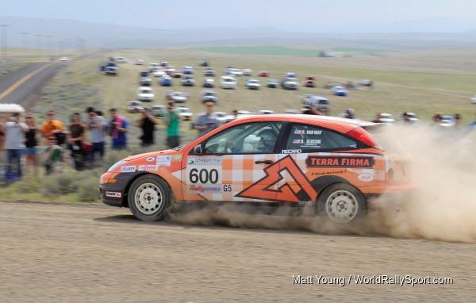

28 two-wheel-drive rally cars will do battle this weekend at the New England Forest Rally

Portland, OR (July 14, 2010) – The second round of the 2010 MaxAttack! Series presented by the Danza del Sol winery will, like the opening round, be a hard-fought competition between nearly 30 two-wheel-drive rally cars. The New England Forest Rally, taking place on July 16 and 17, will be based at the Sunday River Ski Resort near Newry, Maine and will utilize stages in both Maine and New Hampshire. Once again there are a number of manufacturers represented, with Volkswagen being the most popular of the 13 marques. There are front-drive cars, rear-drive cars, turbocharged cars, a pickup, and even a Volkswagen Rabbit powered by used cooking oil.
A number of teams must be considered as potential favorites to take the maximum 25 points towards the prestigious Jake Himes Cup, along with $1500 for the event win. Defending MaxAttack! series champions Lauchlin O’Sullivan and Karen Wagner are venturing east from California to compete in a speedy Dodge Neon SRT-4. O’Sullivan is a stunt driver when he is not behind the wheel of a rally car, and was once a driver for the Mitsubishi U.S. factory rally effort. Eric Burmeister makes a welcome return to the series in another powerful turbocharged car, the 400 horsepower Mazdaspeed3. The 2008 champion will once again be joined by Dave Shindle in the co-driver’s seat. Martin Walter and Ferd Trauttmansdorff are bringing a Nissan 240SX with an SR20DET engine across the border from Ontario, and should wow the spectators with some fast sideways driving.
Local hero Chris Duplessis, from nearby Mason Township, Maine is also expected to contend, though he will be driving a Scion XD rather than his familiar Volkswagen Golf, just as he did in the opening round in Oregon. The Scion has received some performance modifications since Oregon Trail and he and co-driver Catherine Woods should have lots of local fans cheering for them. Upholding Volkswagen honors will be twin brothers Josh and Jeremy Wimpey, who are always very fast in their Golf, and brothers Matt and Andrew Bushore in a Jetta. Young Louisiana hotshoe Dillon Van Way is keen to repeat his Oregon Trail victory earlier this year; he and Ben Slocum compete in a Ford Focus. Also expected to be quick in a Focus are Mark Williams and Shane McCann.
There are some interesting vehicles entered in this event. Jim McClelland and Darlene Jones, from Washington, PA are driving a Toyota MR2, the only mid-engine car in the field. As mentioned, the turbodiesel Greasecar Motorsports VW Rabbit of Justin Carvin and Geoff Clark is engineered to run utilizing used cooking oil as its fuel. Jim Perrin and Lee McElhinny are running the only pickup in the event, a 1986 Jeep Commanche. Internet sensation Bill Caswell is bringing the same $500 BMW 318i that he used at the 2010 Rally Mexico World Rally Championship event, competing this time with co-driver Paul Donlin.
As well as Duplessis, there are a number of participants with ties to Maine. Robert Sockalexis, co-driving for Kevin Turner in a Subaru, is from Old Town. From Gray, ME comes Kristin Przybysz, teamed with Meghan Roy in a Subaru. Michael Reilly, from York, is teamed with co-driver Josh Benthien from Portland in their new Mainiax Motorsports HTPerformance Ford Focus. And making a return to the rally stages for the first time in seven years is Mike White from Camden; he and co-driver Jared Lantzy will be running a brand-new rally car, a 1984 Saab 900.
The first event in the 2010 MaxAttack! series took place at the Oregon Trail Rally in May. The opener proved to be an event-long struggle between the Ford Focus of Dillon Van Way/Ben Slocum and the Honda CRX of Cody Crane/Billy Irvin. Ultimately the Ford prevailed, although it was close. Rounding out the top five were Chris Duplessis/Ron Zaras in a Scion XD, Gaylord Van Brocklin/Steve Secviar in a VW Golf, and Brian Gottlieb and Pat Darrow in a Toyota FX-16.
The 2010 MaxAttack! series champion and Jake Himes Cup winner will be decided in a spectacular “Shootout” fashion in October. The top finishers from the west coast Oregon Trail Rally and the east coast New England Forest Rally are expected to meet in the middle and fight it out at the venerable Lake Superior Rally, on the upper peninsula of Michigan. Of course the same $5,000 event prize fund will be up for grabs for all registered two-wheel-drive entrants at this 2010 season finale.
The 2010 MaxAttack! Rally Series Presented by Danza del Sol consists of three events, which are:
• Oregon Trail, May 14-16, Portland, The Dalles, and Dufur, OR, http://www.oregontrailrally.com
• New England Forest Rally, July 16-17, Bethel, ME, http://www.newenglandforestrally.com
• Lake Superior Performance Rally, October 16-17, Houghton, MI, http://www.lsprorally.com
Each event will feature a $5,000 prize fund to be distributed among the top two-wheel-drive teams, as well as a season championship. For more information about the MaxAttack! Series and the Rallysports Group of America, please visit http://www.max-attack.com.
About Danza del Sol Winery
Nestled in the rolling hills of the beautiful Temecula Wine Valley, Danza Del Sol Winery is a thirty-five acre estate winery located in Southern California’s Wine Country. While Danza Del Sol’s tasting room officially opened in February 2010, the winery itself already has a remarkable history. The estate was previously owned by Dr. William Filsinger and his late wife Katharine, who provided the Temecula Wine Valley with exceptional wines for nearly 30 years. Danza Del Sol is dedicated to producing a unique range of premium varietal and proprietary blended wines that are sure to exceed your expectations, at affordable prices. For more information, please visit http://danzadelsol.com/.
About Rallysports Group of America
Rallysports Group of America, Inc. (RSGA) was formed as an organization in 2006 to advance the sport of performance stage rally in the United States. By providing education on performance driving, car preparation and safety, and by fostering the growth of meaningful competition, RSGA seeks to provide a sustainable and competitive arena for the advancement of North American performance rally that promotes increased value for rally competitors, organizers, and sponsors alike. For more information, please visit http://www.max-attack.com.
About Rally America, Inc.
Based in Golden Valley, Minn., Rally America sanctions the premier rally racing series in the United States, the Rally America National Championship Series. In 2010, Rally America will conduct six National Championship events at venues across the country, from Olympia, Wash., to Bethel, Maine. Rally America competitors reach speeds well over 100 mph in modified street cars on natural-terrain courses of gravel, dirt or snow. In the Fall of 2010, Rally America will also introduce European-style wheel-to-wheel rally cross to North America. For more information regarding Rally America, Inc., the 2010 Rally America National Rally Championship or the new European-style rally cross events taking place at the New Jersey Motor Sports Park in the fall of 2010, please visit www.rally-america.com.
Mandatory Photo Credit: The Ford Focus of Dillon Van Way and Ben Slocum charges towards MaxAttack! victory at Oregon Trail, by Matt Young, World Rally Sport, http://www.worldrallysport.com